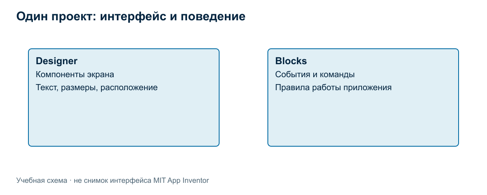
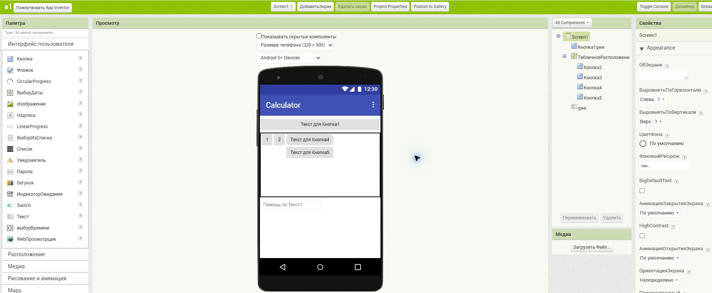
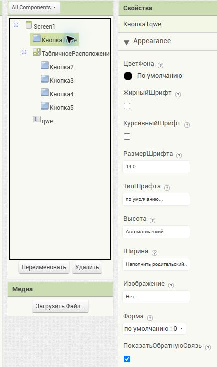
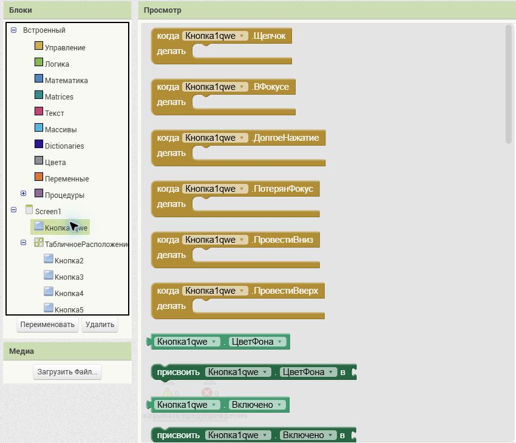
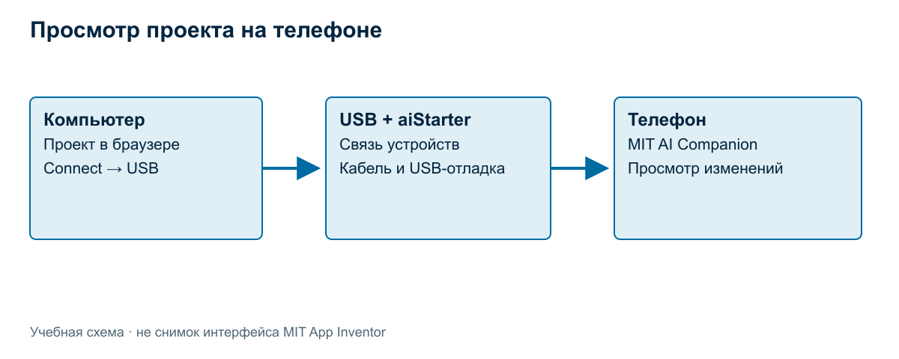
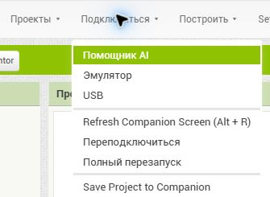

Интерфейс MIT App Inventor и подключение телефона
MIT App Inventor — среда визуальной разработки приложений. Интерфейс создают на компьютере в браузере, а результат можно проверять на телефоне. Для начала работы важно освоить три действия: найти нужный компонент, изменить его свойства и увидеть изменение на устройстве.
Проект и экран приложения
Проект объединяет элементы интерфейса, программную логику и используемые файлы. Экран — часть приложения, с которой взаимодействует пользователь. В первом учебном проекте достаточно одного экрана: надписи и кнопки позволят проверить, как связаны редактор и телефон.
Откройте MIT App Inventor и войдите доступным способом. Создайте проект через команду начала нового проекта в меню проектов. В официальной инструкции она называется Start New Project. Для учебного примера выберем имя LessonCounter. Название проекта служит для организации работы; текст, который увидит пользователь, задаётся отдельно.
Пока задача состоит в знакомстве со средой и просмотре результата. Полный счётчик с увеличением числа и сбросом будет собран в следующих темах. Не нужно одновременно осваивать все компоненты и программировать их поведение.
Designer и Blocks
App Inventor состоит из двух основных рабочих областей. Designer служит для создания интерфейса. Blocks — для программирования поведения соединением блоков. Переключение между ними позволяет работать с двумя сторонами одного приложения: внешним видом и действиями. Официальное описание Designer и Blocks Editor.

Например, в Designer можно добавить кнопку и написать на ней «Добавить». В Blocks будет задано, что случится после её нажатия. Пока обработчик не создан, кнопка может отображаться на телефоне, но не увеличивать число. Это нормальный промежуточный результат разработки.
Designer не является редактором картинки. Размещённые в нём элементы становятся компонентами приложения: у них есть свойства, а к их событиям можно привязать команды. Поэтому важно различать изображение будущего экрана и состав проекта.
Основные области Designer
В Designer удобно ориентироваться по четырём областям: Palette, Viewer, Components, Properties. Они отвечают на разные вопросы: что можно добавить, как элементы расположены, что уже входит в проект и как настроен выбранный элемент. Эти области показаны в учебном материале MIT. На снимке ниже показан открытый учебный проект в русской версии App Inventor. Слева находится «Палитра», в центре — «Просмотр», справа от него — дерево компонентов, а у правого края — «Свойства». Это пример другого экрана, с заголовком Calculator; учебный счётчик мы создаём отдельно.

Рисунок 1. Области Designer на реальном экране проекта.
| Название в документации | Название на этом экране | Назначение |
|---|---|---|
| Designer | Дизайнер | Создание интерфейса |
| Blocks | Блоки | Программирование поведения |
| Palette | Палитра | Выбор компонентов |
| Viewer | Просмотр | Предварительный вид экрана |
| Components | Дерево под All Components | Состав экрана |
| Properties | Свойства | Настройка выбранного элемента |
| Text | Текст | Видимая подпись |
Palette — выбор компонентов
В палитре находятся доступные компоненты. Для первого знакомства нужны Label — надпись и Button — кнопка. Компонент выбирают в палитре и переносят в область просмотра. Так в проект добавляется элемент определённого типа.
Тип компонента и его назначение в конкретном приложении различаются. Button — тип, а «кнопка добавления занятия» — роль выбранного экземпляра. В одном проекте могут находиться две кнопки с разными ролями.
Viewer — расположение на экране
Viewer показывает предварительное расположение элементов. Он помогает понять порядок компонентов и проверить, не забыта ли важная часть интерфейса. Однако предварительный вид не гарантирует полного совпадения с телефоном. Размер экрана и особенности отображения нужно проверять на устройстве. MIT: размещение компонентов и свойства.
Макет на компьютере полезен для редактирования, а телефон — для проверки реального восприятия. Подпись, которая кажется удобной в большом окне браузера, на небольшом устройстве может потребовать другого размещения.
Components — состав проекта
Список компонентов помогает выбрать нужный элемент и понять состав экрана. Если на экране две кнопки, внутренние имена позволяют различать их независимо от цвета и положения.
В нашем примере договоримся использовать имена LabelCount, ButtonAdd и ButtonReset. Это выбранные нами имена. Компонент может первоначально получить другое имя в среде; переименование делает назначение понятнее.
Properties — свойства выбранного элемента
Панель Properties относится к выбранному компоненту. Среди свойств могут быть текст, цвет и размер шрифта. Чтобы изменить надпись, сначала выберите нужный элемент, затем измените его свойство Text. Начальные значения свойств задаются в Designer; многие свойства могут изменяться программой во время работы. MIT: компоненты и их свойства.
Разобранный пример. На экране появилась кнопка с внутренним именем ButtonAdd. Установим Text в «Добавить». Имя помогает найти кнопку внутри проекта, а Text объясняет её назначение пользователю. Если заменить Text на «Ещё занятие», это будет та же кнопка с другой подписью.

Рисунок 2. В дереве выбрана «Кнопка1qwe», поэтому панель «Свойства» относится именно к ней. На снимке видны настройки шрифта, высоты и ширины. Поле «Текст» находится ниже: если оно не помещается, прокрутите страницу. Выбор компонента сам по себе не меняет его свойства.
Видимые и невидимые компоненты
Label и Button видимы пользователю. Но приложение может содержать компоненты, у которых нет отдельного изображения на экране: например, компонент для работы со звуком. Отсутствие такого элемента в видимой части интерфейса не означает, что его нет в проекте. Различие описано в справке MIT о компонентах.
В первом экране достаточно видимых элементов. Знакомство с невидимыми компонентами понадобится позже, когда приложение начнёт использовать дополнительные возможности.
Что находится в Blocks
Blocks содержит рабочую область для правил поведения. Для кнопки можно создать обработчик события нажатия, а внутри него разместить действия: изменить данные, обновить текст или выполнить другую операцию.
Блоки помогают выразить алгоритм, но не придумывают его за разработчика. Сначала нужно ответить словами: «Что должно произойти?» Только затем выбирать команды. Подробный разбор событий и переменной находится в следующей теоретической теме.

Рисунок 3. Слева — встроенные категории и компоненты проекта; рядом открыт набор блоков выбранной кнопки. Верхний шаблон «когда Кнопка1qwe.Щелчок — делать» задаёт обработчик нажатия. Это ещё доступный шаблон: его присутствие в панели не означает, что он добавлен в программу. Рабочая область справа остаётся пустой.
Для проверки соединения с телефоном обработчик пока не обязателен. Достаточно увидеть надпись, изменить её в Designer и убедиться, что телефон показывает новую версию.
Подключение Android-телефона через USB
Для учебной работы используем компьютер с Windows и Android-телефон. В перечне вариантов MIT USB указан именно для Android; инструкция не относится к iPhone. Способы подключения.
USB связывает компьютер и устройство для тестирования. Редактор по-прежнему открыт в браузере. Поэтому кабель не превращает веб-среду в полностью автономный инструмент.

Подготовка компьютера
Установите пакет App Inventor Setup по официальной инструкции для Windows. Используйте ссылку на установщик с этой страницы, а не случайную копию. Установка требует прав администратора. Сохраните стандартное расположение и запомните каталог установки.
В учебной аудитории пакет подготавливается на рабочих компьютерах до начала самостоятельной работы. Если установка недоступна, это ограничение среды; оно не устраняется изменением проекта.
aiStarter устанавливается вместе с пакетом. Он обеспечивает взаимодействие браузера с USB-подключением. В Windows запустите его через ярлык перед подключением из редактора и оставьте работающим. Если App Inventor сообщает, что aiStarter не запущен, проверьте именно этот помощник. Назначение aiStarter.
Подготовка телефона
Установите на телефон MIT AI2 Companion. Затем включите USB debugging — отладку по USB в параметрах разработчика. При первом соединении разблокируйте телефон и подтвердите запрос разрешения отладки для этого компьютера. Эти шаги описаны в инструкции MIT для USB.
Если параметры разработчика скрыты, найдите в настройках сведения об устройстве и пункт «Номер сборки», нажмите его семь раз. Расположение пункта зависит от производителя. Затем откройте появившийся раздел для разработчиков и включите отладку по USB. Android Developers: параметры разработчика.
Разрешение отладки относится к взаимодействию устройства с компьютером. Оно не является разрешением приложения на камеру и не заменяет установку Companion.
Кабель, драйвер и обнаружение устройства
Соедините телефон и компьютер кабелем с передачей данных. Если устройство только заряжается и не определяется, проверьте другой кабель или порт. Для Windows может потребоваться драйвер ADB производителя телефона. Android Developers: подготовка устройства и проверка USB.
ADB — средство связи компьютера с Android-устройством в режиме отладки. Отображение телефона как хранилища файлов и его доступность для отладки проверяют разные возможности.
Откройте страницу проверки MIT. Она отдельно проверяет aiStarter и USB-устройство. Прежде чем запускать проект, убедитесь, что оба этапа проходят.
Для дополнительной диагностики найдите установленный вместе с инструментами файл adb.exe и выполните из его каталога:
.\adb.exe devices
Список должен содержать устройство. Пустой список требует проверки соединения, разрешения отладки и драйвера. Путь к программе зависит от фактического каталога установки; готовый путь наугад использовать не нужно. MIT: проверка драйвера.
Подключение проекта в редакторе
Откройте нужный проект в браузере. В меню Connect, которое в русской версии называется «Подключиться», выберите USB. Пункт USB показан в учебном материале MIT; повторное подключение этим пунктом описано в справке App Inventor 2.

Рисунок 4. В открытом меню выберите именно «USB». Пункт «Помощник AI» относится к другому способу соединения через Companion; для описанного USB-маршрута его выбирать не требуется.
Дождитесь появления экрана проекта на телефоне. aiStarter должен продолжать работу, а кабель — оставаться подключённым. В этой последовательности QR-код Wi-Fi-сеанса не используется.
Краткий порядок действий: Setup → aiStarter → Companion и USB-отладка → кабель и разрешение → проверка соединения → Connect → USB.
Как убедиться, что результат передаётся
Для простой проверки добавьте Label и задайте ему текст «Первый экран». Подключите телефон описанным способом. Затем измените Text на «Соединение работает».
Разобранный пример проверки: если телефон сначала показывает «Первый экран», а после изменения — «Соединение работает», вы наблюдали передачу результата из редактора на устройство. Такая проверка информативнее одного появления экрана: она подтверждает реакцию на новое изменение.
Она ещё не проверяет алгоритм счётчика, сохранение данных или самостоятельный запуск готового приложения. Каждый из этих результатов требует отдельного испытания.
Если приложение не появилось
Проверяйте цепочку соединения по отдельным участкам.
| Наблюдение | Что проверить |
|---|---|
| Страница MIT не обнаруживает aiStarter | Установлен ли помощник и запущен ли он |
| aiStarter обнаружен, телефон — нет | Кабель, USB-отладку, разрешение на экране телефона и драйвер |
| Телефон определяется, проект не появился | Companion, выбранный проект и подключение через Connect → USB |
| Экран появился, кнопка ничего не меняет | Обработчик события: соединение уже не единственная возможная причина |
Такой порядок — учебная схема диагностики. Она помогает связать наблюдение с конкретной проверкой, а не гарантирует одну причину для любого устройства.
Старая USB-страница MIT содержит указания для ранних версий Android, включая режимы накопителя. Их нельзя механически переносить на современный телефон. Для текущей настройки отладки и обнаружения устройства используйте приведённые выше страницы Android Developers и сведения производителя.
Живое тестирование и готовое приложение
Просмотр через Companion нужен во время разработки. Он позволяет быстро проверять проект. Выпуск самостоятельного приложения — отдельный этап. Подключение по кабелю не является выпуском самостоятельного приложения.
Существующая программа курса предусматривает знакомство с несколькими способами разработки. Сейчас наша задача — понять среду и увидеть связь редактора с телефоном. Сборку и распространение результата следует изучать после того, как приложение приобретёт проверенное поведение.
Вопросы и упражнения
- Чем Designer отличается от Blocks?
- Где выбирают компонент, где меняют его Text, а где проверяют состав экрана?
- Чем внутреннее имя кнопки отличается от её видимой подписи?
- Почему предварительный вид в Viewer нужно сравнивать с телефоном?
- Подготовьте проект с одной надписью. Подключите телефон и проверьте передачу изменения текста.
- Составьте короткую запись результата проверки: первоначальная надпись, внесённое изменение, наблюдение на телефоне.
- Почему наличие кнопки на телефоне ещё не доказывает, что счётчик работает?
- Как различить отсутствие соединения и отсутствие обработчика нажатия?
Связанные материалы
Дальше: «Собираем первый экран» и «Событие, переменная и изменение состояния».